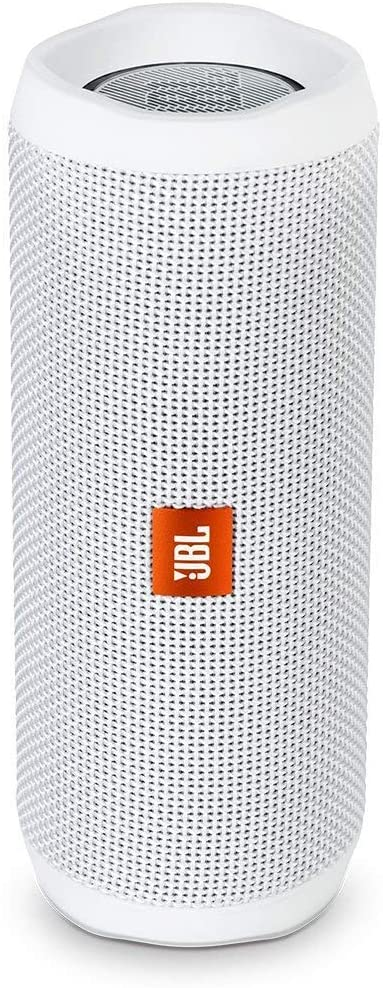
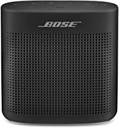
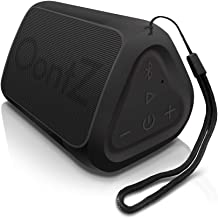
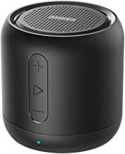

| products | name | detais | prise |
|---|---|---|---|
|  | JBL FLIP 4 | Wirelessly connect up to 2 smartphones or tablets to the speaker and take turns playing impressive stereo sound Built-in 3000mAh rechargeable li-ion battery Supports up to 12 hours of playtime Ipx7 waterproof means no more worrying about rain or spills; you can even submerge flip 4 in water | ₹2000 |
|  | Bose SoundLink Color II | Voice prompts talk you through the Bluetooth pairing so it’s easier than ever or even quick-pair with NFC devices The lithium-ion battery lets you enjoy up to 8 hours of play time, rechargeable with USB power sources | ₹8999 |
|  | OontZ Angle Solo | Incredible 100 Foot Bluetooth Range - Play up to 100 feet away from your device; our advanced antenna design with Bluetooth 4.2 provides fast connection and incredible wireless Bluetooth range of up to 100 unobstructed feet from your device | ₹1700 |
|  | Anker Soundcore Mini | Compact And Powerful: Super-portable Bluetooth speaker delivers powerful sound and robust bass through an advanced 5W driver and passive subwoofer.Extensive Connectivity: Utilizes Bluetooth 4.0 technology for seamless device linking and a 66ft connection range. | ₹1500 |